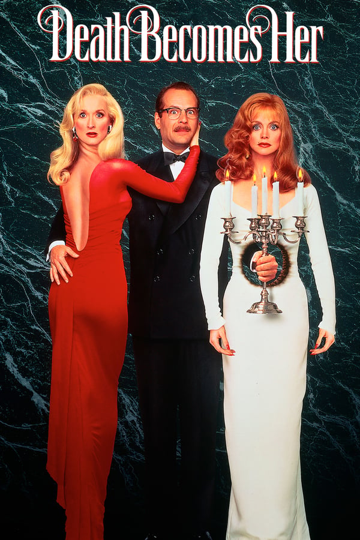

Death Becomes Her

Details
My notes
Death Becomes Her.
About
The 1992 fantasy comedy stars Meryl Streep, Goldie Hawn, and Bruce Willis. Two rivals seek lasting youth through a mysterious potion.

Death Becomes Her.
The 1992 fantasy comedy stars Meryl Streep, Goldie Hawn, and Bruce Willis. Two rivals seek lasting youth through a mysterious potion.